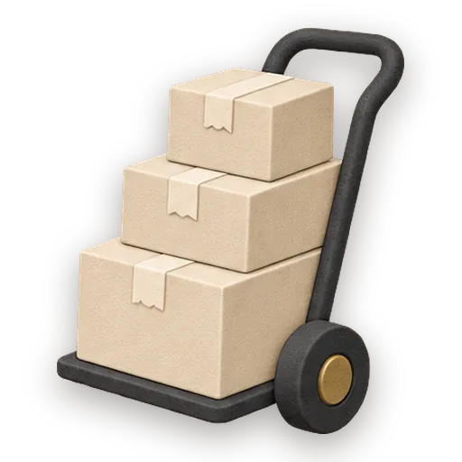

Inventory & Reorder
Know what is in stock and reorder before you run out. A stock keeper tracks every item against its reorder point, keeps each supplier and their lead time, and drafts the purchase orders for you to check and send.
Try it
Open in a full windowInventory & Reorder running in your browser on sample data. Use the page, or talk with the stock keeper beside it: the conversation is scripted for this preview, and the changes stay in the page.
What’s inside
The crew
- Stock Keeper Crew leadA tidy, numbers-first keeper of a small business's stockroom: what is on the shelf, what is running low, which supplier brings it and how long they take, and the purchase orders ready to check and send.
- Office AdministratorThe operations half of a freelancer's brain.
Plans it follows
- Reorder RunTurn a stock check into purchase orders: every item out or at its reorder point with the quantity that fills it back to par, grouped by supplier with lead times and costs, ready for a person to check and send.
Actions the crew can take
- Stock statusWhat is out and running low (out first), each with its count, reorder point, the quantity to order, the supplier and lead time, plus orders on the way and drafts waiting, with ids.
- Add itemSave a stock item: name, unit, how many are on hand now, the reorder point, the par level to order up to, supplier, their lead time in days, and the unit cost in dollars.
- Record stockRecord stock coming in or going out.
- Draft ordersDraft purchase orders, one per supplier, for every item at or below its reorder point that is not already on order; quantities fill each item back up to its par.
- Update orderChange a purchase order: mark it sent when the person says they placed it, received when it arrived (its quantities go into stock), or cancelled; or set one item's quantity on a draft.
- List stockEvery item with its count, reorder point, par, supplier, lead time and price, and every open order.
Each action is a small script that changes the app’s files, checked by Gezel’s security settings before it runs.
Files it keeps
Plain files in the project folder you can open, back up, and read: items.json, orders.json.
Start one
- Download Gezel for Mac, Windows or Linux. It’s free.
- Choose New project, then Business & Teams, then Inventory & Reorder.
- Answer its question: What kind of business is this?
- Your stock keeper takes it from there, on the model you choose.
More apps to try
-
 Business & Teams
Campaign Room
Run one marketing campaign from plan to results.
Try it hereCrew: Campaign Manager + 34 craftbooks
Business & Teams
Campaign Room
Run one marketing campaign from plan to results.
Try it hereCrew: Campaign Manager + 34 craftbooks
-
 Business & Teams
Client Delivery
Deliver client work on time, with every handoff tracked.
Try it hereCrew: Planner + 14 craftbooks
Business & Teams
Client Delivery
Deliver client work on time, with every handoff tracked.
Try it hereCrew: Planner + 14 craftbooks
-
 Business & Teams
Compliance Register
Keep a small business in good standing.
Try it hereCrew: Compliance Officer + 11 craftbook
Business & Teams
Compliance Register
Keep a small business in good standing.
Try it hereCrew: Compliance Officer + 11 craftbook